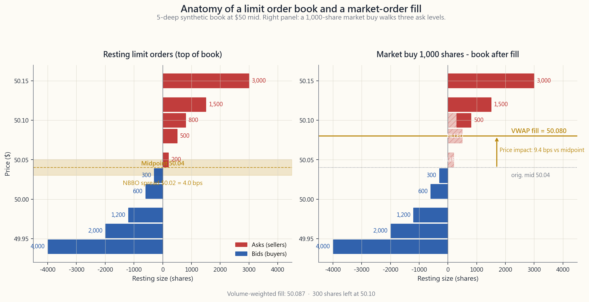
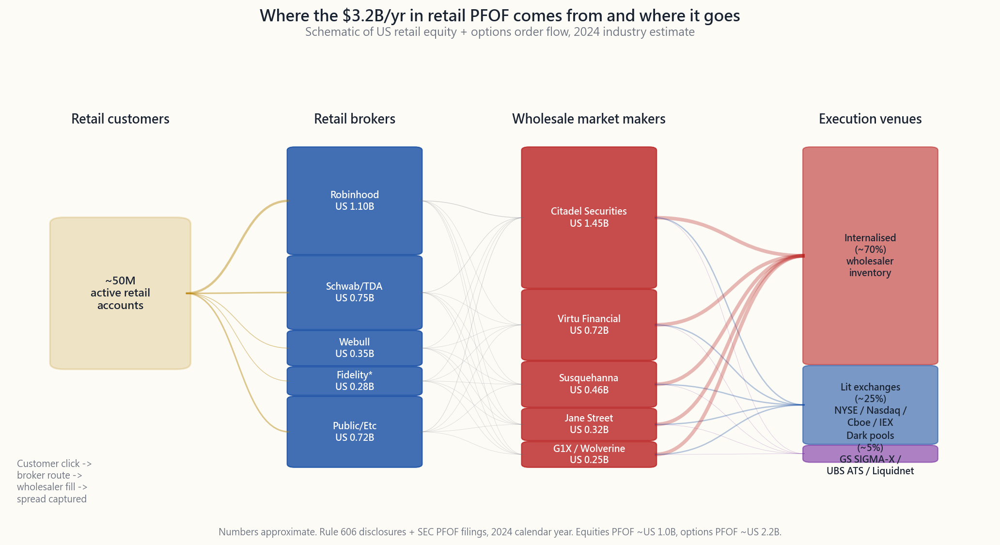

Week 44: Market Microstructure — Order Types, NBBO, Dark Pools, and Payment for Order Flow
1. Why This Is Important
Every "buy" click on a brokerage app sets in motion a routing machine that costs more than the zero commission suggests. The plumbing of US equity markets — exchanges, dark pools, wholesalers, smart-order routers, microwave links between New Jersey and Chicago — was redesigned by Reg NMS in 2007, and it has been quietly siphoning a few basis points out of every retail and institutional fill for two decades. Most investors never see it. That ignorance is the problem.
This week is not about becoming a trader. It is about understanding what happens after you click, so that your fills stop being a tax on your savings.
2. What You Need to Know
2.1 Reg NMS, the NBBO, and why fragmentation exists
Regulation NMS (National Market System), effective 2007, is the rulebook that holds modern US equity markets together. The two pieces you must know are the Order Protection Rule (Rule 611) — no exchange may execute a trade at a price worse than the best displayed quote on any other exchange — and the NBBO (National Best Bid and Offer), the consolidated top-of-book across all 16 lit exchanges.
The unintended consequence of forcing every venue to honour every other venue's quote is that it became economically rational to spin up more venues. As of April 2026 the US has 16 registered stock exchanges (NYSE, Nasdaq, BATS/Cboe BZX/EDGX/BYX/EDGA, IEX, MEMX, MIAX, Long-Term Stock Exchange, etc.) plus roughly 30 alternative trading systems (ATSs, i.e. dark pools). Each exchange charges different maker/taker rebates, and brokers' smart-order routers slice your order across them based on rebate economics, latency, and fill probability. You see one fill at one price; the order may have touched five venues in 200 microseconds. Reg NMS guarantees you weren't filled worse than NBBO; it guarantees nothing about whether you got the midpoint, which is where the spread cost lives.

2.2 Order types: market, limit, stop, stop-limit, IOC, FOK, and the algos
The retail menu has six standing-order types and roughly four institutional algos. Internalise the trade-offs once and you'll never use the wrong one again.
- Market order. "Fill me now at whatever clears." Guaranteed fill, zero price guarantee. Fine for 100 shares of SPY at 11 AM. Catastrophic for 5,000 shares of a $30 small-cap or a $200 illiquid options contract.
- Limit order. "Fill at $X or better, or don't fill." Default for any retail trade larger than 200 shares or in any name with a spread wider than a penny. A marketable limit (buy limit at the offer) gets you the certainty of a market order with a hard ceiling.
- Stop / stop-loss. "Trigger a market order when last trade hits $X." Do not use in illiquid names. In a gap-down open at -10%, a stop at -5% sells you at -10%, not at -5%.
- Stop-limit. Trigger a limit order instead of a market order on the same condition. Protects against terrible fills, but may not fill at all in a gap.
- IOC (Immediate-Or-Cancel). Fill what you can right now at the limit price; cancel the rest. Used by smart-order routers to ping multiple venues without leaving residual exposure.
- FOK (Fill-Or-Kill). Fill the entire size at the limit, immediately, or cancel everything. Rare for retail; used for block prints and arbitrage legs that must execute together.
2.3 Dark pools and the 15-45% off-exchange share
A dark pool is an ATS that accepts orders without displaying quotes pre-trade. Trades print to the consolidated tape after execution but before then no one outside the pool knows a buyer at $X exists. As of 2025 roughly 15% of US equity volume executes inside formal dark pools (Goldman SIGMA-X, UBS ATS, Credit Suisse Crossfinder, IEX, Liquidnet) and another 30% executes off-exchange via wholesalers and single-dealer platforms — together "off-exchange" volume runs 40-45% of consolidated tape on most days.
Why dark pools exist: a $50M institutional buy program shown openly on a lit exchange invites HFT front-running. Cross the same size at the midpoint inside a pool with another natural seller and both sides save the spread plus avoid the impact. Why they're controversial: pool operators historically routed customer orders against their own prop trades, and post-trade tape latency means dark-pool prints can be used to update lit quotes faster than retail can react. The SEC has fined every major pool operator at least once for misrepresenting how the pool actually worked.
Practical retail takeaway: when your broker says "executed at the midpoint" or "PFOF rebate," your order touched a wholesaler's internal pool, not an exchange. That is not necessarily bad — for sub-1,000-share retail flow, midpoint internalisation is often cheaper than crossing the spread on a lit venue.
2.4 Payment for order flow (PFOF)
PFOF is the deal where a retail broker (Robinhood, Schwab, Webull, Public, Fidelity for options) routes its customer orders to a wholesale market maker (Citadel Securities, Virtu, Susquehanna, Jane Street, G1X) in exchange for a per-share payment. Industry-wide PFOF revenue ran roughly $3.0-3.5 billion in 2024 across equities and options, with options paying ~10× equities per contract because options spreads are wider and the wholesaler's profit per fill is larger.
The economic claim that defenders make is that retail flow is uninformed — when a Robinhood user buys 25 shares of NVDA, the trade carries no negative selection for the market maker. Citadel Securities can internalise the order at NBBO + 0.0002 (a fraction of a cent of price improvement), pay Robinhood half a penny per share for routing it there, and still make money from the spread because the trade is uncorrelated with short-term price moves. The math works because retail is dumb flow in the technical, non-pejorative sense.
The critique: the routing decision optimises for broker revenue, not customer execution quality. SEC Rule 605/606 disclosures show measurable variation in execution quality across wholesalers. The 2021 GameStop episode (Robinhood's PMCC default risk forced trading restrictions) revealed how concentrated this plumbing is — a single wholesaler clearing 40%+ of a broker's volume creates structural fragility.

2.5 Latency arbitrage and the microsecond economy
Reg NMS guarantees the NBBO at the moment of execution, but the NBBO is a moving target updated by the SIP (Securities Information Processor) consolidator. The SIP runs on a fibre path with consolidation latency of roughly 350-500 microseconds as of 2026. Direct exchange feeds (the proprietary feeds each exchange sells to HFT firms) update the same data in ~50 microseconds. The 300-microsecond gap between SIP and direct feeds is where latency arbitrage lives.
Concrete pattern: an HFT firm sees a buy print on Nasdaq's direct feed at $50.05. The SIP-consolidated NBBO still reads $50.04 / $50.06 because the SIP hasn't propagated yet. The HFT crosses the SIP-quoted offer on every other exchange before those exchanges update — picking off orders that were stale by 200 microseconds. IEX (the "speed bump" exchange founded by the Flash Boys protagonists) responded with a 350-microsecond physical coil that delays inbound orders, neutralising the gap. Roughly 3-4% of US equity volume routes to IEX as of 2026; the rest of the market still runs on the speed-favours-the-fast model.
Microstructure sits in the "structural" bucket of alpha sources — a real source, almost entirely captured by the fastest co-located firms. As a retail or even mid-tier institutional trader, you cannot win this race; you can only stop bleeding to it by using limit orders, avoiding the open and close where SIP latency widens, and using brokers whose routers ping IEX and dark pools first.
2.6 Slippage on size: the $1M-trade reality
For trades under ~$10,000 in liquid names, microstructure costs are roughly the half-spread (1-3 bps) plus possibly a fraction of a cent of negative impact (i.e. price improvement) from PFOF. Above that, slippage scales roughly with the square root of size relative to ADV (average daily volume), the so-called Almgren-Chriss square-root impact model.
A back-of-envelope April-2026 calibration for liquid US equities: expected total slippage in basis points ≈ 10 × √(order size / 1% of ADV). A 1%-of-ADV order costs ~10 bps; a 4%-of-ADV order ~20 bps; a 25%-of-ADV order ~50 bps. SPY at 80M ADV absorbs $40M+ orders almost invisibly; a $1M order in a $200M-mcap small-cap with 200k ADV is 50%+ of the day's volume and will move the print 100-300 bps.
The institutional response is to break large orders into a TWAP/VWAP across hours or days. The retail equivalent is: scale into positions over multiple sessions if your ticket is more than 0.1% of the name's ADV. The interactive lets you feel this scaling first-hand.
2.7 The 2010 Flash Crash and what it taught the plumbing
May 6, 2010, 2:32 PM ET: the Dow falls roughly 9% (about 1,000 points) in minutes and recovers most of it by 3:08 PM. The post-mortem identified a single $4.1B sell program in E-mini S&P futures executed by a Kansas mutual fund, run via a poorly-parametrised algo with no price floor. That program drained futures-market liquidity, triggered cross-asset HFT arbitrage selling in equities, and as realised volatility spiked, equity market makers withdrew quotes simultaneously to avoid adverse selection. With no resting bids, a thin layer of stub-quote sells (placeholder $0.0001 bids) became actual prints — Accenture traded at $0.01 and Sotheby's at $99,999.99 — for a few seconds.
The regulatory response: single-stock circuit breakers (LULD bands — Limit Up/Limit Down — that pause trading when a stock moves 5% / 10% / 20% off its 5-minute average), market-wide breakers at -7% / -13% / -20% from the prior close, and the consolidated audit trail (CAT) for forensic reconstruction. These have prevented a repeat but the underlying fragility — market makers withdrawing in tail volatility — is unchanged. The fat tail is what wags the system.
3. Common Misconceptions
4. Q&A Section
Q1: Should I always use limit orders instead of market orders? A: Almost always yes for any order over 100 shares or in any name with a spread wider than a penny. The exception is highly liquid SPY/QQQ/AAPL-style names at mid-day where the spread is one tick and the cost of a possible non-fill is higher than the half-tick spread cost. Even then, a marketable limit (buy at the offer) is strictly safer.
Q2: How much does PFOF actually cost me as a retail trader? A: On sub-1,000-share equity orders in liquid names, roughly nothing — possibly slightly negative cost (price improvement). On options, about 5-15 cents per contract relative to the best alternative. On larger equity orders (5,000+ shares), the wholesaler stops improving and the spread cost becomes real. So: small + liquid = fine; large or options = scrutinise.
Q3: Can I trade through IEX to avoid latency arbitrage? A: Yes — most major brokers let you specify IEX as a routing destination, often as part of a "speed bump" or "long-term investor" routing preset. IEX accounts for ~3-4% of US equity volume and its 350-microsecond delay neutralises the SIP-vs-direct-feed gap. The cost is occasionally slower fills.
Q4: What is the practical difference between a stop and a stop-limit on a long position? A: A stop becomes a market sell when triggered — you will fill, possibly at a much worse price in a gap. A stop-limit becomes a limit sell — you may not fill at all if the price gaps through the limit. Stop is for "I want out, full stop." Stop-limit is for "I want out at a defined price or I'm willing to ride it out."
Q5: How do I size a TWAP order for retail? A: As a rough rule, slice anything that exceeds 0.5% of the name's ADV into 4-8 sub-orders across the trading day, leaving the open and close (highest spreads) thin. Most retail brokers don't expose true TWAP, but you can manually approximate. For S&P 500 names this only kicks in around $1M+ tickets.
Q6: Why does my fill price differ from the price I see on the screen at click time? A: Three sources: (1) your screen shows the SIP NBBO with ~300 µs latency; (2) your order took 50-500 ms to reach the broker, who routed it across multiple venues; (3) within those latencies the NBBO moved. For 100 shares of a liquid name, the variance is usually a fraction of a cent. For thinner names it can be 5-50 cents.
Q7: Are dark pools available to retail investors? A: Indirectly, yes — your broker's smart-order router likely pings several dark pools on your behalf before routing to a lit venue. You don't choose the pool, but execution may already happen there. Direct dark-pool access is institutional-only.
Q8: What is the harm in market-on-close (MOC) orders? A: MOC orders execute at the official closing auction price, which is well-defined for liquid names but can be heavily influenced by index rebalancing flows in the last 5 minutes. For routine retail use it's fine; for sensitive entries near earnings or rebalances, prefer a marketable limit before the auction.
Q9: How does payment for order flow interact with options? A: Heavily. Options PFOF is roughly 10× equity PFOF per share-equivalent because options spreads are wider, retail-options flow is more uninformed, and there are fewer competing market makers. Rule 606 reports show ~80% of retail options flow goes to ~5 wholesalers. The cost shows up as the difference between your fill and the option's NBBO midpoint, often 5-15 cents per contract.
Q10: Did the 2010 Flash Crash actually result in retail losses? A: Mostly no for resting positions — the recovery within 30 minutes meant buy-and-hold positions barely budged. The losers were investors with active stop-loss orders that triggered and filled at the ridiculous prints; many of those trades were busted (cancelled by the exchanges) under the "clearly erroneous" rule, but the busts were inconsistent and some retail traders were left with locked-in losses. The lesson is barbell-shaped: never let a stop-loss order be the line between solvent and not.
Q11: What is "internalisation"? A: When your broker's wholesaler executes your order against its own inventory rather than routing to an exchange. Wholesaler captures the spread; you get NBBO or slightly better; the trade prints to the tape but never touched a public order book. Roughly 30% of US equity volume is internalised in 2026.
Q12: Is microstructure something I need to think about for buy-and-hold investing? A: For sub-$50k positions in liquid US equities held for years, no — costs are negligible relative to total return. For accumulation phases where you're buying $5k of a small-cap monthly, yes — bid 30 bps below NBBO with a limit order rather than market-buying. For decumulation in retirement where you're selling 6-figure tickets, definitely — break orders into multi-day TWAPs.
第44週：市場微觀結構——盤單類型、全國最佳買賣價、暗池及訂單流付款
1. 為何此議題至關重要
每次在券商應用程式上點擊「買入」，都會啟動一套路由機器，其實際成本遠超零佣金所呈現的表象。美國股票市場的基礎架構——交易所、暗池、批發商、智能盤單路由器、連接新澤西與芝加哥的微波鏈路——於2007年因Reg NMS監管法規重新設計，二十年來一直悄悄地從每筆零售及機構成交中抽取若干個基點。絕大多數投資者對此渾然不覺，而這種無知正是問題所在。
本週的目的並非要你成為交易員，而是讓你了解點擊「買入」後究竟發生了什麼，從而讓你的成交不再成為積蓄的稅收。
2. 你需要掌握的知識
2.1 Reg NMS、全國最佳買賣價及碎片化市場的成因
Regulation NMS（全國市場系統法規），於2007年正式生效，是維繫現代美國股票市場運作的規則手冊。你必須了解其中兩個重點：訂單保護規則（第611條）——任何交易所均不得以劣於其他任何交易所最佳顯示報價的價格執行交易——以及全國最佳買賣價（NBBO），即所有16家明盤交易所的綜合最優報價。
強制所有場所遵守彼此報價這一規定，帶來了一個意料之外的後果：開設更多場所在經濟上變得合理。截至2026年4月，美國擁有16家已登記股票交易所（紐約證券交易所、納斯達克、BATS/Cboe BZX/EDGX/BYX/EDGA、IEX、MEMX、MIAX、長期股票交易所等），以及約30家另類交易系統（ATS，即暗池）。每家交易所收取不同的做市商/吃單方回扣，券商的智能盤單路由器根據回扣經濟學、延遲時間及成交概率，將你的盤單分拆至各個場所執行。你看到的是一個價格的一次成交；而這筆盤單實際上可能在200微秒內觸及了五個場所。Reg NMS保證你的成交不會差於全國最佳買賣價；但它對你能否獲得中間價並無任何保證——而差價成本正是在中間價上體現的。
2.2 盤單類型：市價盤、限價盤、止蝕盤、止蝕限價盤、IOC、FOK及算法盤
零售盤單菜單涵蓋六種常規盤單類型及約四種機構算法盤。徹底理解這些取捨，你將永遠不會再選錯盤單類型。
- 市價盤。 「立即以任何可成交的價格執行。」保證成交，不保證價格。適用於上午11時買入100股標普500指數基金。若用於5,000股30美元細價股或200美元流動性不足的期權合約，則可能造成災難性後果。
- 限價盤。 「以指定價格或更佳的價格成交，否則不成交。」對於任何超過200股的零售交易，或差價超過一仙的任何股票，應以此為預設盤單類型。可即時成交的限價盤（以賣出價下買入限價盤）可兼顧市價盤的確定性與硬性上限。
- 止蝕盤/止損盤。 「當最新成交價觸及指定價格時，觸發市價盤。」切勿用於流動性不足的股票。若股票跳空低開10%，而你的止蝕設於-5%，實際成交將在-10%，而非-5%。
- 止蝕限價盤。 在相同條件下觸發限價盤而非市價盤。可防止極差成交，但在跳空時可能根本無法成交。
- IOC（即時或取消盤）。 立即以限價盡量成交，餘量取消。由智能盤單路由器用於同時探詢多個場所，而不留下殘餘敞口。
- FOK（全部成交或取消盤）。 立即以限價全數成交，否則全部取消。零售投資者較少使用；常用於大手成交印記及必須同步執行的套利配對。
2.3 暗池及15至45%的場外成交量佔比
暗池是一種交易前不顯示報價的另類交易系統。交易於成交後才印記於綜合成交帶，在此之前，池外任何人均不知道某買家以指定價格的存在。截至2025年，約15%的美國股票成交量在正式暗池中執行（高盛SIGMA-X、瑞銀ATS、瑞信Crossfinder、IEX、Liquidnet），另有約30%透過批發商及單一交易商平台場外執行——合計而言，「場外」成交量在大多數交易日佔綜合成交帶的40至45%。
暗池存在的原因：若5,000萬美元的機構買盤計劃公開掛於明盤交易所，每家位於卡特里特的高頻交易算法都會察覺並搶先布局。若能在暗池中以全國最佳買賣價中間價與另一自然賣家對盤，雙方均可節省差價並避免價格衝擊。暗池備受爭議的原因：從歷史上看，池運營商曾將客戶盤單路由至其自身的自營交易盤，且成交後帶時間差的印記，意味著暗池成交印記可在零售投資者反應之前更新明盤報價。美國證監會已至少對每家主要暗池運營商罰款一次。
零售投資者的實際啟示：當你的券商顯示「以中間價成交」或「訂單流付款回扣」時，你的盤單已進入批發商的內部池，而非交易所。這未必是壞事——對於不足1,000股的零售流量而言，中間價內部化通常比在明盤交易所跨越差價更划算。
2.4 訂單流付款（PFOF）
訂單流付款是指零售券商（Robinhood、嘉信理財、Webull、Public，以及Fidelity在期權方面）將客戶盤單路由至批發做市商（城堡證券、Virtu、薩斯奎哈納、Jane Street、G1X），並換取按股計算的付款的安排。2024年全行業訂單流付款收入在股票及期權合計方面約為30至35億美元，其中期權每張合約的付款約為股票的10倍，原因是期權差價更寬，批發商每筆成交的利潤空間更大。
支持者的經濟學論點是：零售流量屬於非知情交易——當Robinhood用戶買入25股英偉達時，這筆交易對做市商並不構成逆向選擇風險。城堡證券可在全國最佳買賣價加0.0002（分數仙的價格改善）的價格內部化這筆盤單，向Robinhood支付每股半仙的路由費，仍可從差價中獲利，因為這筆交易與短期價格走勢毫無關聯。這個商業模式成立，是因為零售交易在技術意義上（而非貶義）屬於「愚蠢流量」。
批評意見是：路由決策的優化目標是券商收入，而非客戶執行質量。美國證監會第605/606條規則的披露顯示，各批發商的執行質量存在可量化的差異。2021年GameStop事件（Robinhood的保證金清算違約風險迫使其限制交易）揭示了這套管道系統的高度集中性——單一批發商清算某券商逾40%的盤單量，製造了結構性脆弱性。
2.5 延遲套利與微秒經濟
Reg NMS保證執行時刻的全國最佳買賣價，但全國最佳買賣價本身是一個不斷移動的目標，由SIP（證券信息處理器）整合更新。截至2026年，SIP的光纖路徑整合延遲約為350至500微秒。各交易所向高頻交易公司出售的自有交易所直接數據源更新相同數據僅需約50微秒。這300微秒的差距，正是延遲套利的溫床。
具體模式：高頻交易公司從納斯達克直接數據源看到以50.05美元的買入成交印記。SIP整合的全國最佳買賣價仍顯示50.04 / 50.06，因為SIP尚未完成傳播。高頻交易商在SIP更新前，以SIP顯示的賣盤價在所有其他交易所下掃——截取了那些滯後200微秒的過時盤單。IEX（由《快閃小子》主角創立的「速度緩衝」交易所）以一條350微秒的實體光纖線圈延遲入盤，從而消除了這一差距。截至2026年，約3至4%的美國股票成交量路由至IEX；其餘市場仍運行在「速度決定勝負」的模式之下。
微觀結構在阿爾法來源中屬於「結構性」類別——真實存在，但幾乎已被最快的共置高頻交易公司完全套取。作為零售或中型機構交易者，你無法贏得這場速度競賽；你能做的，是透過使用限價盤、避開SIP延遲最寬的開市及收市時段，以及使用優先探詢IEX和暗池的路由券商，來停止被動失血。
2.6 大手盤的滑點：百萬美元交易的現實
對於流動性良好股票中不超過約10,000美元的交易，微觀結構成本大約等於半個差價（1至3個基點），加上訂單流付款帶來的可能為分數仙的負面衝擊（即價格改善）。超出這一規模後，滑點大致按盤單規模相對於日均成交量（ADV）之比例的平方根擴大，即所謂的Almgren-Chriss平方根衝擊模型。
以2026年4月美國流動股票的粗略估算：預期總滑點（以基點計）≈ 10 × √（盤單規模 / 日均成交量的1%）。日均成交量1%的盤單成本約為10個基點；4%約為20個基點；25%約為50個基點。標普500指數基金日均成交量達8,000萬股，可輕鬆吸納逾4,000萬美元的盤單而幾乎不留印記；而一筆100萬美元的盤單若投於市值2億美元、日均成交量20萬股的細價股，則佔當日成交量的50%以上，可將成交印記移動100至300個基點。
機構的應對方式是將大盤單分拆為數小時乃至數日的TWAP/VWAP執行。零售投資者的等效做法是：若票面金額超過目標股票日均成交量的0.1%，應分多個交易日分批建倉。互動模組讓你親身體驗這種分批操作的效果。
2.7 2010年閃崩及其對市場管道的啟示
2010年5月6日，美東時間下午2時32分：道指在數分鐘內下跌約9%（約1,000點），並於下午3時08分收復大部分失地。事後調查確認，觸發事件是堪薩斯州一家互惠基金透過參數設定不當的算法，以無價格下限的方式執行的一筆41億美元的E-mini標普期貨沽盤。該沽盤抽乾了期貨市場流動性，觸發跨資產高頻交易套利沽壓蔓延至股票市場，隨著已實現波動性急升，股票做市商同步撤回報價以規避逆向選擇風險。在沒有任何買盤承接的情況下，薄如紙片的佔位性報價（0.0001美元的佔位買盤）竟然成為實際成交印記——埃森哲以0.01美元成交，蘇富比以99,999.99美元成交——僅維持了數秒。
監管回應包括：單一股票熔斷機制（LULD波動限制——當股票偏離5分鐘平均價5%/10%/20%時暫停交易）、全市場熔斷機制（跌幅達前日收市-7%/-13%/-20%時啟動），以及用於法證重建的綜合審計追蹤系統（CAT）。這些措施已防止了完全相同事件的重演，但市場根本脆弱性——做市商在尾部波動中撤盤——並未改變。尾部肥尾仍是左右整個系統的力量。
3. 常見誤解
4. 問答環節
問題1：我應該永遠使用限價盤而非市價盤嗎？ 答：對於超過100股的任何盤單，或差價超過一仙的任何股票，幾乎應當如此。例外情況是流動性極高的標普500指數基金/納斯達克100指數基金/蘋果公司等股票在盤中時段，差價僅一個跳位，且可能不成交的代價高於半個跳位的差價成本。即便如此，可即時成交的限價盤（以賣盤價買入）從嚴格意義上講仍更安全。
問題2：訂單流付款實際上對我這個零售投資者的成本影響有多大？ 答：對於流動股票中不足1,000股的股票盤單，成本大約為零——甚至可能略為負成本（即獲得價格改善）。對於期權，相對於最佳替代方案，每張合約約為5至15美分。對於較大規模的股票盤單（5,000股以上），批發商不再進行價格改善，差價成本開始顯現。因此：小手盤加流動股票＝問題不大；大手盤或期權＝需仔細審視。
問題3：我能通過路由至IEX來避免延遲套利嗎？ 答：可以——大多數主要券商允許你指定IEX作為路由目的地，通常作為「速度緩衝」或「長期投資者」路由預設選項。IEX佔美國股票成交量的約3至4%，其350微秒的延遲有效消除了SIP與直接數據源之間的差距。代價是偶爾成交速度較慢。
問題4：對於長倉而言，止蝕盤與止蝕限價盤的實際區別是什麼？ 答：止蝕盤觸發後成為市價沽盤——你必然會成交，但在跳空時成交價可能大幅惡化。止蝕限價盤觸發後成為限價沽盤——若價格跳空穿越限價，可能根本無法成交。止蝕盤適用於「我無論如何都要出場」的情況。止蝕限價盤適用於「我只願以特定價格出場，否則寧願繼續持倉」的情況。
問題5：如何為零售投資者的TWAP盤單設定規模？ 答：粗略原則是，將任何超過目標股票日均成交量0.5%的盤單分拆為全日4至8筆子盤單執行，並在差價最寬的開市及收市時段減少交易量。大多數零售券商不提供真正的TWAP功能，但你可以手動近似實現。對於標普500成份股，這一做法通常僅在100萬美元以上的盤單才需要考慮。
問題6：為何我的成交價格與點擊時屏幕顯示的價格不同？ 答：三個原因：（1）你的屏幕顯示的是SIP全國最佳買賣價，帶有約300微秒的延遲；（2）你的盤單花了50至500毫秒才到達券商，券商再將其路由至多個場所；（3）在這些延遲期間，全國最佳買賣價已發生移動。對於流動股票的100股盤單，誤差通常在分數仙以內。對於流動性較差的股票，誤差可達5至50美分。
問題7：零售投資者可以使用暗池嗎？ 答：間接可以——你的券商智能盤單路由器很可能在路由至明盤交易所之前，已代表你探詢了多個暗池，尋求中間價對盤機會。你無法自行選擇暗池，但成交可能已在其中發生。直接訪問暗池僅限機構投資者。
問題8：收市市價盤（MOC）有什麼弊端？ 答：收市市價盤以官方收市競價拍賣價格成交，對流動股票而言定義明確，但在最後5分鐘可能受到指數再平衡資金流的嚴重影響。對於日常零售操作而言問題不大；但在業績公告或再平衡附近的敏感入市時機，建議在競價拍賣前使用可即時成交的限價盤。
問題9：訂單流付款與期權的關係如何？ 答：關係密切。期權訂單流付款每股等效金額約為股票的10倍，因為期權差價更寬，零售期權流量的非知情性更強，且競爭做市商更少。第606條規則報告顯示，約80%的零售期權流量流向約5家批發商。成本體現為你的成交價與期權全國最佳買賣價中間價之間的差距，通常為每張合約5至15美分。
問題10：2010年閃崩是否真的造成了零售投資者的損失？ 答：對於持倉頭寸而言，大體上沒有——由於30分鐘內即告恢復，買入持有的頭寸幾乎未受影響。損失者是設有止蝕盤的投資者，這些盤單在觸發後以荒謬的印記價格成交；許多此類交易隨後依據「明顯錯誤」規則被撤銷（由交易所取消），但撤銷標準並不統一，部分零售投資者仍鎖定了損失。教訓是兩端分化的：永遠不要讓一份止蝕市價盤成為你與破產之間的唯一防線。
問題11：「內部化」是什麼意思？ 答：當你的券商批發商以自身庫存執行你的盤單，而非路由至交易所時，即為內部化。批發商獲取差價；你獲得全國最佳買賣價或略優於全國最佳買賣價的成交；交易印記至成交帶，但從未觸及公開訂單簿。截至2026年，約30%的美國股票成交量以此方式內部化。
問題12：對於買入持有的投資者，微觀結構是否需要考慮？ 答：對於持有多年、規模低於5萬美元的流動美國股票頭寸，無需考慮——成本相對於總回報可忽略不計。對於每月定期買入5,000美元細價股的積累期，需要考慮——使用限價盤低於全國最佳買賣價30個基點掛盤，而非直接市價買入。對於退休後出售六位數頭寸的提取期，必須考慮——將盤單分拆為多日TWAP執行。
第44週：市場微結構——委託單類型、NBBO、暗池與委託單流量報酬
1. 為何這很重要
每一次在券商App上點擊「買入」，都會啟動一套路由機器，其背後的成本遠超表面上的零手續費。美國股票市場的底層架構——交易所、暗池、批發商、智慧委託單路由器、紐澤西州與芝加哥之間的微波連結——於2007年《全國市場系統規則》（Reg NMS）重塑後，二十年來一直悄悄從每一筆散戶與機構成交單中汲取數個基點。絕大多數投資人從未察覺，而這份無知，正是問題所在。
本週的目的不是讓你成為交易員，而是讓你理解點擊「買入」之後究竟發生了什麼，讓你的成交結果不再成為你儲蓄的隱性稅負。
2. 你需要了解的知識
2.1 Reg NMS、NBBO，以及市場碎片化存在的原因
《全國市場系統規則》（Reg NMS），於2007年生效，是維繫現代美國股票市場運作的規則手冊。你必須掌握其中兩項核心：委託單保護規則（Rule 611）——任何交易所不得以劣於其他交易所最佳顯示報價的價格成交——以及NBBO（全國最佳買賣報價），即所有16家亮盤交易所的整合委託簿最優報價。
強制要求每個交易場所尊重其他交易場所報價的意外後果，是讓設立「更多」交易場所在經濟上變得理性。截至2026年4月，美國擁有16家登記在冊的股票交易所（紐約證交所、納斯達克、BATS/Cboe BZX/EDGX/BYX/EDGA、IEX、MEMX、MIAX、長期股票交易所等），以及約30家另類交易系統（ATS，即暗池）。每家交易所收取不同的造市/吃單回扣，券商的智慧委託單路由器根據回扣經濟效益、延遲時間與成交概率，將你的委託分拆至多個交易場所。你看到的是一筆以單一價格成交的委託；但該委託可能在200微秒內觸及五個不同場所。Reg NMS保證你的成交價不會劣於NBBO；但它無法保證你是否拿到了「中間價」——而價差成本正藏在那裡。
2.2 委託單類型：市價、限價、停損、停損限價、IOC、FOK，以及演算法委託
散戶的選單包含六種固定委託單類型和約四種機構演算法委託。一次性掌握這些取捨，你便再也不會用錯委託單。
- 市價單。「立即成交，不論價格。」保證成交，無價格保障。適用於上午11點買100股SPY，但對某$30小型股的5,000股或$200的低流動性選擇權合約而言，可能造成災難性後果。
- 限價單。「以$X或更優的價格成交，否則不成交。」適用於任何超過200股的散戶交易，或任何價差超過一分錢的標的。「可成交限價單」（以賣價掛買入限價）能讓你獲得市價單的確定性，同時設有硬性天花板。
- 停損單/停損市價單。「當最新成交觸及$X時，觸發市價單。」不得用於流動性不足的標的。在跳空低開-10%時，設在-5%的停損單，會讓你以-10%成交，而非-5%。
- 停損限價單。在相同觸發條件下，觸發限價單而非市價單。可防止極差的成交價，但在跳空行情下可能完全無法成交。
- IOC（立即或取消）。以限價立即成交能成交的部分，其餘取消。由智慧委託單路由器用來同步詢問多個交易場所，避免殘留倉位。
- FOK（全部成交或取消）。以限價立即全數成交，否則全部取消。散戶罕用；用於需同步執行的大宗成交和套利組合腿。
2.3 暗池與15%至45%的場外成交占比
暗池是一種在交易前不顯示報價的另類交易系統。交易成交後才會列印至整合行情，在此之前，池外的任何人都不知道某位買方在$X的價位存在。截至2025年，美國約15%的股票成交量在正式暗池內執行（Goldman SIGMA-X、UBS ATS、Credit Suisse Crossfinder、IEX、Liquidnet），另有約30%透過批發商和單一交易商平台場外執行——合計「場外」成交量，在大多數日子占整合行情的40%至45%。
暗池存在的原因：一個5,000萬美元的機構買入計劃若在亮盤交易所公開展示，會讓Carteret的每一套高頻交易演算法前置搶跑。若同一筆大單能在暗池中以NBBO中間價與另一個自然賣方撮合，雙方都能省下價差並規避衝擊。暗池的爭議之處：池子運營商在歷史上曾將客戶委託流量引導至自家自營交易，且成交後行情帶有延遲，暗池成交資訊可被用來在散戶反應之前更新亮盤報價。美國證管會已至少對每家主要池子運營商開過一次罰款。
散戶的實務要點：當你的券商告知「以中間價成交」或「PFOF回扣」時，你的委託已觸及批發商的內部池，而非交易所。這不一定是壞事——對1,000股以下的散戶流量而言，中間價內部化通常比在亮盤交易所跨越價差更划算。
2.4 委託單流量報酬（PFOF）
PFOF是一種交易安排：散戶券商（Robinhood、嘉信理財、Webull、Public、Fidelity（選擇權部分））將客戶委託路由至批發造市商（Citadel Securities、Virtu、Susquehanna、Jane Street、G1X），以換取每股報酬。2024年全行業PFOF收入，跨股票和選擇權合計約為30億至35億美元，其中選擇權每合約的報酬約為股票的10倍，因為選擇權價差較寬，批發商每筆成交的獲利空間更大。
支持者的經濟主張是：散戶委託流量屬於「未知情交易」——當Robinhood用戶買入25股NVDA時，這筆交易對造市商不構成逆向選擇風險。Citadel Securities能以NBBO加0.0002（低於一分錢的價格改善）內部化委託，向Robinhood支付每股半分錢的路由費，仍能從價差中獲利，因為這筆交易與短期價格走勢無關。這套邏輯成立，是因為散戶是技術意義上「愚蠢的委託流量」——此處無貶義。
批評的聲音：路由決策是為了券商收益最大化，而非客戶執行品質最佳化。美國證管會Rule 605/606披露資料顯示，不同批發商之間的執行品質存在可衡量的差異。2021年GameStop事件（Robinhood的PMCC違約風險迫使其限制交易）揭示了這套架構的集中度問題——單一批發商處理某券商40%以上的成交量，形成結構性脆弱。
2.5 延遲套利與微秒經濟
Reg NMS保障成交當下的NBBO，但NBBO是一個由SIP（證券資訊處理器）整合更新的動態目標。截至2026年，SIP整合延遲約為350至500微秒。各交易所向高頻交易公司出售的專有直連行情，更新同一數據只需約50微秒。SIP與直連行情之間約300微秒的差距，正是延遲套利的生存空間。
具體模式：一家高頻交易公司透過納斯達克直連行情，在$50.05看到一筆買入成交。SIP整合的NBBO仍顯示$50.04/$50.06，因為SIP尚未傳播更新。高頻交易公司在其他所有交易所，於那些交易所完成更新前，先行吃掉SIP報價的賣價——截取了時間上落後200微秒的委託單。IEX（《閃電男孩》主角創辦的「減速帶」交易所）以一條350微秒的實體光纖線圈，對入場委託進行延遲，中和了這一差距。截至2026年，約3%至4%的美國股票成交量路由至IEX；其餘市場仍運行「速度決定勝負」的模式。
微結構屬於「結構性」阿爾法來源的範疇——真實存在，幾乎全部由最快的共置機構公司所截取。作為散戶甚至是中等規模的機構交易員，你無法贏得這場速度競賽；你能做的，只是透過使用限價單、避開SIP延遲最寬的開盤和收盤時段、以及優先選用路由至IEX和暗池的券商，來停止對它的「失血」。
2.6 大單的滑價：百萬美元交易的現實
對流動性良好的標的，低於約1萬美元的交易，微結構成本大致等於半個價差（1至3個基點），再加上PFOF可能帶來的些許「負成本」（即價格改善）。超過這個規模，滑價大致按照委託規模相對於ADV（日均成交量）比例的平方根進行擴展，即所謂的Almgren-Chriss平方根衝擊模型。
以2026年4月流動性良好的美國股票進行粗略估算：預期總滑價（基點）≈ 10 × √（委託規模 / ADV的1%）。ADV的1%成本約10個基點；ADV的4%約20個基點；ADV的25%約50個基點。SPY的ADV為8,000萬股，4,000萬美元以上的委託幾乎察覺不到衝擊；而在市值2億美元、ADV為20萬股的小型股中下100萬美元的單，相當於當天成交量的50%以上，將使成交價移動100至300個基點。
機構的對策是將大型委託分拆為數小時乃至數天的TWAP/VWAP執行。散戶的等效做法是：若單票規模超過該標的ADV的0.1%，分多個交易日分批建倉。互動工具能讓你親身感受這種分拆的效果。
2.7 2010年閃崩及其對市場架構的啟示
2010年5月6日，下午2:32（東部時間）：道瓊指數在數分鐘內下跌約9%（約1,000點），並在下午3:08前收復大部分跌幅。事後調查認定，由一支堪薩斯州共同基金透過參數設定不當、無價格下限的演算法，執行的一筆41億美元的E-mini標普期貨賣出計劃是肇因。該計劃耗盡了期貨市場的流動性，觸發跨資產的高頻交易套利拋售，隨著實現波動性飆升，股票造市商同步撤銷報價以規避逆向選擇風險。在沒有任何靜止買單的情況下，少量的「存根報價」賣單（$0.0001的佔位買單）成了實際成交——Accenture曾在幾秒內以$0.01成交，Sotheby's則以$99,999.99成交。
監管回應：單一股票熔斷機制（LULD限漲限跌區間——當股票自5分鐘平均價格偏離5%/10%/20%時暫停交易）、全市場熔斷機制（相對前收盤價下跌-7%/-13%/-20%觸發），以及用於事後重建的整合審計追蹤（CAT）。這些措施已防止相同事件重演，但根本性的脆弱——造市商在尾部波動時撤單——依然未變。尾部肥尾才是驅動整個系統的根本力量。
3. 常見迷思
4. 問答環節
Q1：我是否應該永遠用限價單取代市價單？ A：幾乎在任何情況下，超過100股的委託或任何價差超過一分錢的標的，答案都是肯定的。唯一的例外是在盤中時段交易SPY/QQQ/AAPL這類高流動性標的，價差只有一個跳動點，此時可能無法成交的機會成本，高於半個跳動點的價差成本。即便如此，「可成交限價單」（以賣價掛買入限價）仍是更安全的選擇。
Q2：PFOF對我這個散戶投資人實際上花費了多少？ A：對流動性良好標的的1,000股以下股票委託，大致為零——甚至可能略為負成本（價格改善）。對選擇權，相對最佳替代方案，大約每合約5至15美分。對較大的股票委託（5,000股以上），批發商停止改善，價差成本變得真實。因此：小單且流動性高 = 可接受；大單或選擇權 = 需仔細審視。
Q3：我是否可以透過IEX下單來規避延遲套利？ A：可以——大多數主要券商允許你將IEX指定為路由目的地，通常以「減速帶」或「長期投資者」路由預設選項呈現。IEX占美國股票成交量的約3%至4%，其350微秒的延遲能中和SIP與直連行情之間的差距。代價是偶爾會有稍慢的成交。
Q4：多頭部位的停損單與停損限價單，在實務上有何區別？ A：停損單在觸發後變成市價賣單——你一定會成交，但在跳空行情下，可能以更差的價格成交。停損限價單在觸發後變成限價賣單——若價格跳空穿越限價，可能完全無法成交。停損單適用於「我要出場，不計代價」；停損限價單適用於「我要在設定的價格出場，否則我願意繼續持有」。
Q5：散戶如何設定TWAP委託的規模？ A：粗略原則是，任何超過該標的ADV的0.5%的委託，都應分拆為4至8個子委託，分散至整個交易日，並在價差最寬的開盤和收盤時段減少執行量。大多數散戶券商不提供真正的TWAP功能，但你可以手動近似模擬。對標普500成分股而言，這個需求通常在100萬美元以上的單票才開始顯現。
Q6：為什麼我的成交價格與點擊當下螢幕上顯示的價格不同？ A：來源有三：（1）你的螢幕顯示的SIP NBBO有約300微秒的延遲；（2）你的委託花了50至500毫秒才到達券商，券商隨後將其路由至多個交易場所；（3）在這些延遲期間，NBBO已經移動。對流動性良好標的的100股委託，差異通常不超過一分錢的幾分之一。對較薄的標的，可能達到5至50美分。
Q7：散戶投資人是否能使用暗池？ A：間接可以——你的券商智慧委託路由器，可能在路由至亮盤交易所前，已代你詢問多個暗池。你無法選擇特定的池子，但你的成交可能已在其中發生。直接進入暗池僅限機構投資人。
Q8：市場收盤委託（MOC）有什麼風險？ A：MOC委託以官方收盤競價價格成交，對流動性良好的標的而言定義明確，但在最後5分鐘可能受到指數再平衡流量的強烈影響。用於日常散戶交易是可行的；若在財報或再平衡附近進場，建議在競價前改用可成交限價單。
Q9：委託單流量報酬如何與選擇權交互作用？ A：影響顯著。選擇權PFOF約為股票PFOF每股等值的10倍，原因在於選擇權價差較寬、散戶選擇權流量更屬於未知情交易，且競爭的造市商數量較少。Rule 606報告顯示，約80%的散戶選擇權流量流向約5家批發商。成本體現在你的成交價格與選擇權NBBO中間價之間的差距，通常每合約為5至15美分。
Q10：2010年閃崩是否真的造成散戶損失？ A：持有倉位的散戶大多沒有損失——30分鐘內的價格恢復意味著長期持有的部位幾乎未受影響。損失者是那些觸發了停損單並以荒謬的異常成交價成交的投資人；其中許多交易被交易所依「明顯錯誤」規則撤銷（取消），但撤銷並不一致，部分散戶仍承受了已確定的損失。教訓是兩極化的：絕對不要讓停損市價單成為你免於破產的最後防線。
Q11：什麼是「內部化」？ A：當你的券商批發商以自身庫存對你的委託進行成交，而不是將委託路由至交易所時，即稱為內部化。批發商賺取價差；你拿到NBBO或略優的價格；成交列印至行情帶，但從未觸及公開委託簿。2026年，美國股票成交量中約有30%被內部化。
Q12：微結構是買進持有投資人需要關注的事情嗎？ A：對於持有流動性良好美國股票超過數年、規模低於5萬美元的部位，不需要——相對於總報酬，成本可忽略不計。對於每月定期定額買入某小型股5,000美元的累積期投資人，需要——用限價單以低於NBBO 30個基點的價格掛入，而非以市價單買入。對於在退休階段出售六位數金額的去累積期投資人，絕對需要——將委託單分拆為數日的TWAP執行。
第44周：市场微观结构——订单类型、全国最优买卖报价、暗池与支付订单流
1. 为什么这很重要
每一次在券商App上点击"买入"，都会启动一套路由机器，其实际成本远超零佣金所暗示的水平。美国股票市场的底层架构——交易所、暗池、批发商、智能路由器、新泽西与芝加哥之间的微波链路——经2007年《全国市场系统条例》（Reg NMS）重塑后，已悄然从每一笔零售与机构成交中抽取数个基点，长达二十年。绝大多数投资者对此浑然不觉，而这种无知本身正是问题所在。
本周的目标不是把你培养成一名交易员，而是帮你理解点击之后究竟发生了什么，从而让你的成交价格不再成为一种储蓄税。
2. 核心知识点
2.1 Reg NMS、NBBO，以及市场碎片化的成因
《全国市场系统条例》（Reg NMS），自2007年起生效，是维系现代美国股票市场的规则手册。你必须掌握其中两个要点：订单保护规则（第611条）——任何交易所均不得以劣于其他任何交易所最优显示报价的价格执行交易——以及全国最优买卖报价（NBBO），即全部16家有照交易所顶层订单的综合最优价。
强制每个交易场所遵守其他所有场所报价的意外后果，是催生了更多交易场所的经济动机。截至2026年4月，美国拥有16家注册证券交易所（纽约证券交易所、纳斯达克、BATS/Cboe BZX/EDGX/BYX/EDGA、IEX、MEMX、MIAX、长期股票交易所等），以及约30家替代交易系统（ATS，即暗池）。每家交易所收取不同的报价方/接受方返佣，券商的智能订单路由器依据返佣经济性、延迟与成交概率将你的订单切分至各场所。你看到的是一个价格的单笔成交；而这笔订单可能在200微秒内触达了五个交易场所。Reg NMS保证你的成交价不会劣于NBBO，但对于你是否获得了中间价——价差成本所在——则毫无保证。
2.2 订单类型：市价单、限价单、止损单、止损限价单、IOC、FOK及算法交易
零售菜单包含六种常规订单类型和约四种机构算法。一次性掌握其利弊权衡，你将终身不会再用错。
- 市价单。 "以任何能成交的价格立即成交。"保证成交，不保证价格。适用于上午11点买入100股标普500指数ETF。对5,000股30美元小盘股或200美元非流动性期权合约而言，则是灾难。
- 限价单。 "以X美元或更优价格成交，否则不成交。"任何超过200股或价差超过一美分的零售交易的默认选择。可成交限价单（按卖价挂买入限价单）兼具市价单的确定性与硬性价格上限。
- 止损单/止损单。 "当最新成交价触及X美元时，触发市价单。"切勿用于非流动性标的。若某股以-10%跳空低开，设置在-5%的止损单将以-10%成交，而非-5%。
- 止损限价单。 在相同触发条件下触发限价单而非市价单。可防止糟糕的成交价格，但在跳空行情中可能根本无法成交。
- IOC（即时成交或撤销单）。 以限价立即成交可成交部分，其余撤销。智能订单路由器用此方式同时探测多个交易场所，而不留下剩余敞口。
- FOK（全额成交或撤销单）。 以限价立即全量成交，否则全部撤销。零售场景罕见；用于大宗成交和须同步执行的套利腿。
2.3 暗池与15%至45%的场外成交占比
暗池是一种接受订单但不在交易前显示报价的替代交易系统。成交后才将结果报入综合行情，此前池外任何人均不知晓某位买家以X美元挂单。截至2025年，约15%的美国股票成交量在正式暗池内执行（高盛SIGMA-X、瑞银ATS、瑞士信贷Crossfinder、IEX、Liquidnet），另有约30%通过批发商和单一做市商平台场外执行——合计来看，"场外"成交量在多数交易日占综合行情的40%至45%。
暗池存在的原因：若一个5,000万美元的机构买盘计划公开显示在有照交易所，将招致高频交易算法的抢先交易。而在池内与另一位自然卖家以NBBO中间价对敲相同规模，则双方均可节省价差并规避冲击。争议所在：历史上，池运营商曾将客户订单路由至自营交易台对手方，且成交后行情的报送延迟意味着暗池成交记录可被用于在零售投资者反应之前更新有照交易所的报价。SEC已至少对每家主要暗池运营商处罚一次，原因均是虚假陈述池的实际运作机制。
零售实操要点：当你的券商表示"已按中间价成交"或"收到PFOF返佣"时，你的订单触达了批发商的内部池，而非交易所。这未必是坏事——对1,000股以下的零售交易流而言，中间价内化往往比在有照交易所跨越买卖价差更为经济。
2.4 支付订单流（PFOF）
支付订单流是指零售券商（Robinhood、嘉信理财、Webull、Public、富达期权业务）将客户订单路由给批发做市商（城堡证券、Virtu、苏士克汉那、Jane Street、G1X），以换取按股计费报酬的机制。2024年全行业股票与期权的PFOF收入约为30亿至35亿美元，期权PFOF约为股票的10倍（以每合约计），原因在于期权价差更宽，批发商每笔成交的利润空间更大。
支持者的经济逻辑是：零售交易流属于非知情交易——当Robinhood用户买入25股英伟达时，这笔交易对做市商不构成逆向选择。城堡证券可在NBBO+0.0002（零点几美分的价格改善）处内化该订单，向Robinhood支付每股半美分的路由费，且由于该交易与短期价格走势无关，仍可从价差中盈利。这套逻辑之所以成立，是因为零售是技术意义上的"愚蠢交易流"——此处无任何贬义。
批评方的观点是：路由决策以券商收益为最优化目标，而非客户执行质量。SEC第605/606条规则的信息披露显示，各批发商的执行质量存在可测量的差异。2021年游戏驿站事件（Robinhood因做市商保证金违约风险被迫限制交易）揭示了这套管道的高度集中性——单一批发商处理一家券商40%以上的成交量，造成结构性脆弱。
2.5 延迟套利与微秒经济
Reg NMS保证成交时刻的NBBO，但NBBO是一个持续变动的目标，由证券信息处理器（SIP）整合更新。截至2026年，SIP的整合延迟约为350至500微秒。各交易所向高频交易公司出售的专有直接行情（Direct Feed）更新同一数据仅需约50微秒。SIP与直接行情之间约300微秒的差距，正是延迟套利的生存空间。
具体模式：某高频交易公司通过纳斯达克直接行情看到一笔50.05美元的买入成交。SIP综合NBBO仍显示50.04/50.06，因为SIP尚未传播更新。高频交易公司在其他所有交易所的直接行情更新之前，跨越SIP报价的卖价，扫走那些已滞后200微秒的订单。IEX（由《闪光男孩》主人公创立的"速度减震器"交易所）以一段350微秒的物理光纤线圈延迟入站订单，从而消弭这一差距。截至2026年，约3%至4%的美国股票成交量路由至IEX；其余市场仍运行在"速度越快越有利"的模型上。
微观结构阿尔法属于"结构性"类别——确实存在，但几乎全部被托管于交易所机房的最快速公司所截获。作为零售或中等规模的机构交易者，你无法赢得这场竞赛；你能做到的，是通过使用限价单、避开SIP延迟最宽的开盘和收盘时段、以及优先使用路由至IEX和暗池的券商，来减少对其的被动失血。
2.6 大单的滑点：百万美元交易的现实
对流动性名称中低于约1万美元的交易而言，微观结构成本大约等于半个买卖价差（1至3个基点），加上可能来自PFOF的零点几美分的负向冲击（即价格改善）。超过这一门槛后，滑点大致与订单规模相对于ADV（日均成交量）之比的平方根成正比，即所谓的Almgren-Chriss平方根冲击模型。
以2026年4月美国流动性股票的粗略校准为例：预期总滑点（基点）≈ 10 × √(订单规模 / ADV的1%)。1%ADV的订单约产生10个基点冲击；4%ADV约20个基点；25%ADV约50个基点。标普500指数ETF日均成交量8,000万股，可轻松消化4,000万美元以上的订单而几乎不留痕迹；而一张100万美元的订单，若挂在市值2亿美元、日均成交量20万股的小盘股上，则占当日成交量的50%以上，将使成交价格偏移100至300个基点。
机构的应对方式是将大单拆分为数小时乃至数日的TWAP/VWAP分批执行。零售的等价做法是：若订单规模超过该标的ADV的0.1%，则跨多个交易日分批建仓。交互模块可让你直观感受这种分批效果。
2.7 2010年闪崩及其对市场架构的启示
2010年5月6日，美东时间下午2:32：道指在数分钟内下跌约9%（约1,000点），并于下午3:08前收复大部分失地。事后复盘确认，导火索是堪萨斯州一家共同基金通过参数设置失误（缺乏价格下限）的算法，在E-mini标普500期货上执行的一笔41亿美元的卖出程序。该程序抽干了期货市场的流动性，触发跨资产高频交易套利卖盘蔓延至股票市场，随着已实现波动性急剧攀升，股票做市商为规避逆向选择，同步撤出报价。无挂单买盘的情况下，一薄层存根报价卖单（占位用的0.0001美元买价）成为实际成交记录——埃森哲以0.01美元成交，苏富比以99,999.99美元成交——仅持续数秒。
监管回应：单只股票熔断机制（LULD涨跌停机制——当股价偏离5分钟均价超过5%/10%/20%时暂停交易）、全市场熔断机制（较前收盘价下跌-7%/-13%/-20%触发），以及用于事后溯源的综合审计追踪系统（CAT）。这些措施阻止了历史的字面重演，但根本性脆弱性——做市商在尾部波动中集体撤出——依然存在。肥尾就是驱动整个系统的力量。
3. 常见误区
4. 问答环节
问题1：我是否应该始终使用限价单而非市价单？ 答：对于超过100股或价差超过一美分的任何标的，几乎始终如此。例外是在交易日中段，高流动性标的（标普500指数ETF/纳指ETF/苹果股票类）价差仅为一个跳动，此时可能无法成交的成本高于半跳动的价差成本。即便如此，可成交限价单（按卖价挂买入限价单）在严格意义上仍更为安全。
问题2：支付订单流作为零售投资者实际要付出多少代价？ 答：对流动性名称中1,000股以下的股票订单，大约为零——甚至可能略有负成本（即价格改善）。期权方面，相比最优替代方案，约为每合约5至15美分。对规模较大的股票订单（5,000股以上），批发商停止价格改善，价差成本真实存在。结论：小单+流动性强=问题不大；大单或期权=需仔细审视。
问题3：我能通过路由至IEX来规避延迟套利吗？ 答：可以——大多数主要券商允许你将IEX指定为路由目标，通常通过"速度减震器"或"长期投资者"路由预设实现。IEX约占美国股票成交量的3%至4%，其350微秒延迟可消弭SIP与直接行情之间的差距。代价是偶尔成交速度较慢。
问题4：多头持仓中止损单与止损限价单的实际区别是什么？ 答：止损单在触发时变为市价卖单——你的订单会成交，但在跳空行情中可能以远低于预期的价格成交。止损限价单变为限价卖单——若价格跳空穿越限价，则可能根本无法成交。止损单适用于"我无论如何都要出场"；止损限价单适用于"我希望以确定价格出场，否则宁愿继续持有"。
问题5：如何为零售设置TWAP订单规模？ 答：粗略原则是，将超过该标的ADV 0.5%的委托拆分为4至8个子订单，分散至全天执行，并在价差最宽的开盘和收盘时段减少委托量。多数零售券商不提供真正的TWAP功能，但你可以手动近似模拟。对标普500成份股而言，这一做法通常在单笔委托规模超过100万美元后才变得必要。
问题6：为什么我的成交价与点击时屏幕上显示的价格不同？ 答：三个来源：（1）你的屏幕显示的是有约300微秒延迟的SIP NBBO；（2）你的订单花费50至500毫秒到达券商，券商再将其路由至多个交易场所；（3）在这段延迟期间NBBO已发生变动。对流动性名称的100股订单而言，偏差通常不足一美分。对流动性较差的标的，偏差可能达5至50美分。
问题7：零售投资者能使用暗池吗？ 答：间接可以——你的券商智能订单路由器很可能在路由至有照交易所之前代你探测数个暗池，寻找中间价对敲机会。你无法选择具体的池，但成交可能已经在那里发生。直接访问暗池仅限机构客户。
问题8：使用收盘市价单（MOC）有什么风险？ 答：MOC订单以官方收盘集合竞价价格成交，对流动性名称而言定价明确，但可能在最后5分钟内受到指数再平衡资金流的显著影响。日常零售使用没有问题；但在财报发布前后或再平衡敏感时期进行关键建仓时，建议在集合竞价前使用可成交限价单。
问题9：支付订单流与期权的交互机制如何？ 答：影响显著。期权PFOF约为股票PFOF每股当量的10倍，原因在于期权价差更宽、零售期权交易流知情程度更低，且做市商数量更少。第606条规则报告显示，约80%的零售期权交易流流向约5家批发商。成本表现为你的成交价与期权NBBO中间价之间的差距，通常为每合约5至15美分。
问题10：2010年闪崩是否真的给零售投资者造成了损失？ 答：对持仓中的投资者而言，大多数情况下没有——30分钟内的价格恢复意味着买入并持有的持仓几乎未受波及。受损的是持有活跃止损单、并在荒诞成交价上触发止损的投资者；许多此类交易依据"明显错误"规则被交易所撤销，但撤销执行不一致，部分零售投资者仍被锁定在亏损中。教训具有两极性：永远不要让止损单成为偿付能力与破产之间的唯一防线。
问题11：什么是"内化"？ 答：当你的券商批发商以自有库存直接执行你的订单，而非将其路由至交易所时，即为内化。批发商赚取价差；你获得NBBO或略优于NBBO的价格；交易记录报入行情，但从未触及公开订单簿。2026年，约30%的美国股票成交量通过内化完成。
问题12：对于买入并持有的投资者，微观结构是需要关注的问题吗？ 答：对于持有多年、持仓规模低于5万美元的美国主流股票，答案是否定的——相对于总收益，成本可以忽略不计。对于每月买入5,000美元某小盘股的资产积累阶段，答案是肯定的——以低于NBBO 30个基点的价格挂限价单，而非以市价买入。对于退休后需要出售大额持仓的资产变现阶段，答案是绝对肯定的——将订单拆分为多日TWAP执行。